#2641 Der Medicus
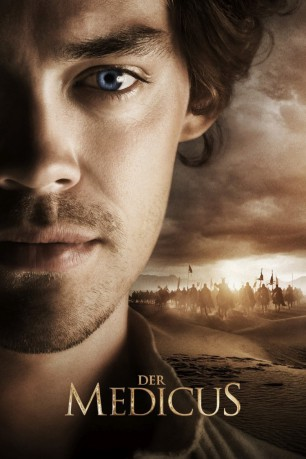 
 IMDB-Wertung: 7.2 / 10
IMDB-Wertung: 7.2 / 10  Metascore: 0
Metascore: 0 
Im Jahr 1021 wird der neunjährige Rob Cole in London zur Waise. Durch den Lauf des Schicksals begegnet er dem fahrenden Bader Henry Croft, der ihn als Lehrling zu sich nimmt. Bei ihm lernt Rob die fundamentalen Geheimnisse der Heilkunst, aber auch Zirkusstücke wie das Jonglieren. Nach dem Tod des Baders reift in Rob der Wunsch, Medizin zu studieren. Und so begibt er sich auf eine abenteuerliche Reise in den Orient, um beim berühmten Arzt Ibn Sina Avicenna die begehrte Wissenschaft zu erlernen und ein anerkannter Medicus zu werden.
Jahr: 2013
Dauer: 181 Minuten
FSK: 12
Land: Deutschland Studio: Universal PicturesTonspuren: DTS - ,
Untertitel: Englisch,
Auflösung: 1080p (1920x816) Größe: 10342 MB
Genre: Drama, Abenteuer, Geschichte
Regisseur: Philipp Stölzl
Drehbuch: Noah Gordon, Jan Berger, Philipp Stölzl, Simon Block, Christoph Müller
Soundtrack: Ingo Frenzel
Darsteller:
- Tom Payne als Rob Cole
 Stellan Skarsgård als Barber
Stellan Skarsgård als Barber- 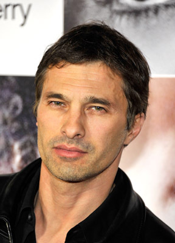 Olivier Martinez als Shah Ala ad Daula
- Emma Rigby als Rebecca
- 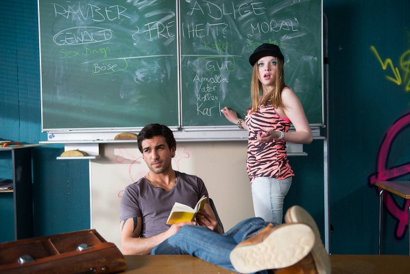 Elyas M'Barek als Karim
- 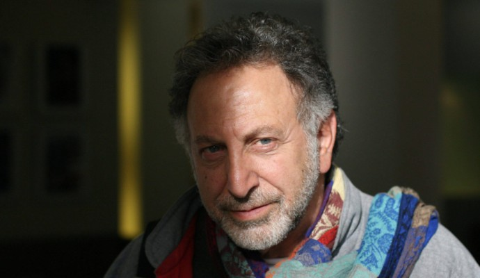 Makram Khoury als Imam
 Ben Kingsley als Ibn Sina
Ben Kingsley als Ibn Sina Stanley Townsend als Bar Kappara
Stanley Townsend als Bar Kappara- 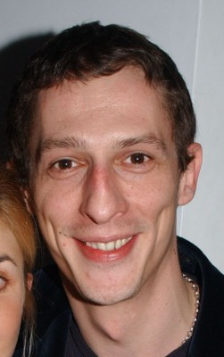 Martin Hancock als Merlin
- Adam Thomas Wright als Rob Cole, 10 Years
- Aidan Kelly als Priest
- 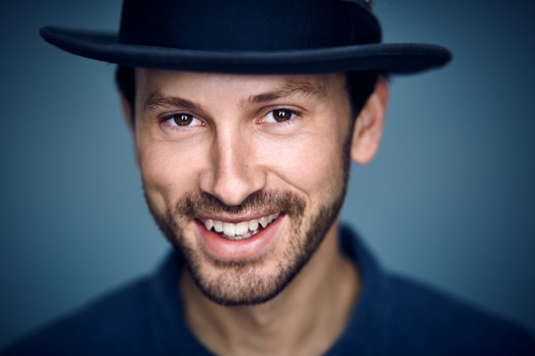 Franz Dinda als Merlin's Apprentice
- Mourad Zaoui als Shah's Messenger #2
- 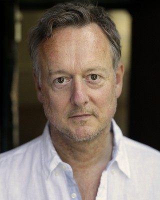 Ian T. Dickinson als Young Boy's Father
- Michael Jibson als Stratford Monk
- Manuela Biedermann als Older Whore
- 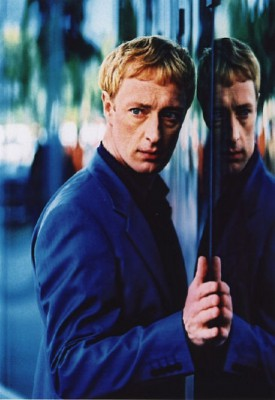 Wilfried Hochholdinger als Tavern Guest
- Mohammad-Ali Behboudi als Orderly
- Robert A. Foster als Street Urchin
- 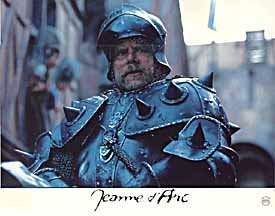 Richard Ridings als Tough Guy
- 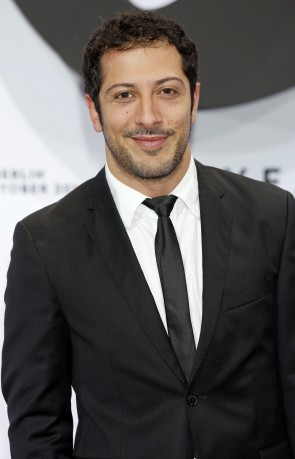 Fahri Yardim als Davout Hossein
- Michael Marcus als Mirdin
 Emil Marwa als Tuveh Ben Meir
Emil Marwa als Tuveh Ben Meir- Jodie McNee als Agnes Cole
- Dominique Moore als Despina
- Mohamen Mehdi Ouazanni als Mirdin's Father
- Raouia als Mirdin's Mother
- Rabii Benjhail Tadlaoui als Jew in Caravan
- Peter Bankole als Mano Dayak
- Renu Setna als Quasim
- Lais Benjamin Campos als Anne Cole, 4 years
- Aaron Kissiov als Samuel Cole, 6 years
- Louis Fahrenholz als Benjamin, 10 years
- Percy Hutchison als Jesse, 7 years
- 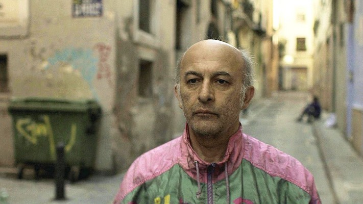 Ramin Yazdani als Rabbi
 Sahin Eryilmaz als Fat Hakim
Sahin Eryilmaz als Fat Hakim- Hamid Najah als Elder 1
- Mahmoudi M'Barek als Elder 2
- Ben Aïssa El Jirari als Gate Guard
- Barbara Philipp als Wrench
- Vincent Ebrahim als Tughrul
- Mansour Badri als City Guard
- Abdelhak Belamjahd als Bar Kappara Servant
- Irshad Panjatan als Pharmacist
- Gerti Drassl als Trembling Woman
- Said Darif als Rabbi 2
- Abdellatif Chaouqi als Shah's Messenger #1
- Yassine Afroukh als Shah's Messenger #3
- Isaiah Michalski als Young Boy
- Mohamed Nouaimane als Masked Man
Datei: X:\2013(I-M)\Medicus, Der (2013, FSK12, 1920x816).mkv seit 30.11.2015
Festplatte: HD 2013(I-Z)-2014(A-Z)
 Es gibt insgesamt 89 Filme in der Gruppe '2013(I-M)'
Es gibt insgesamt 89 Filme in der Gruppe '2013(I-M)'